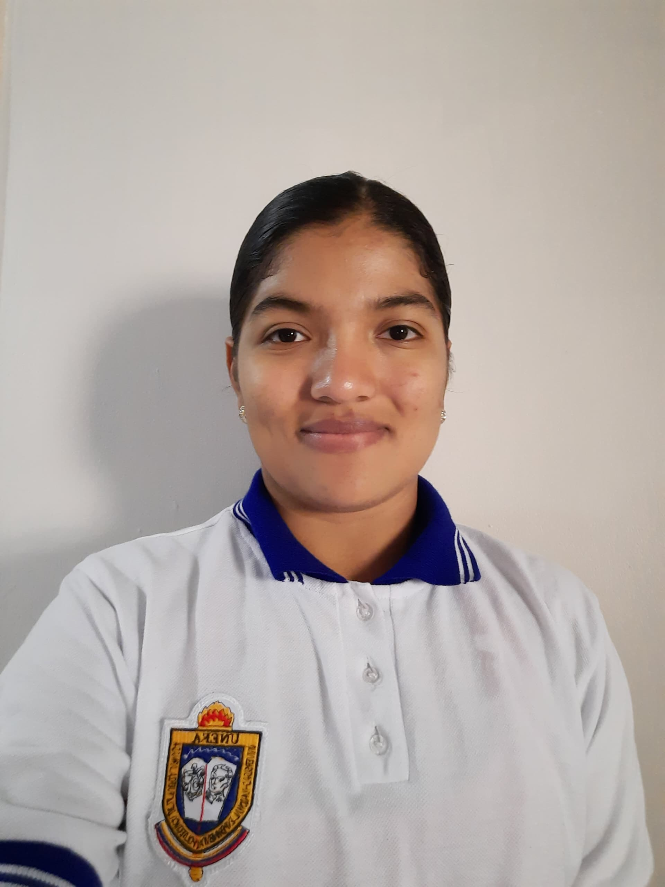
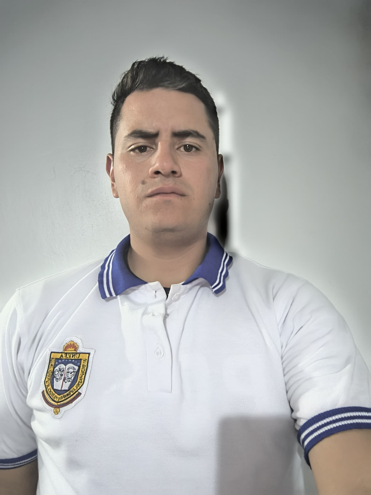
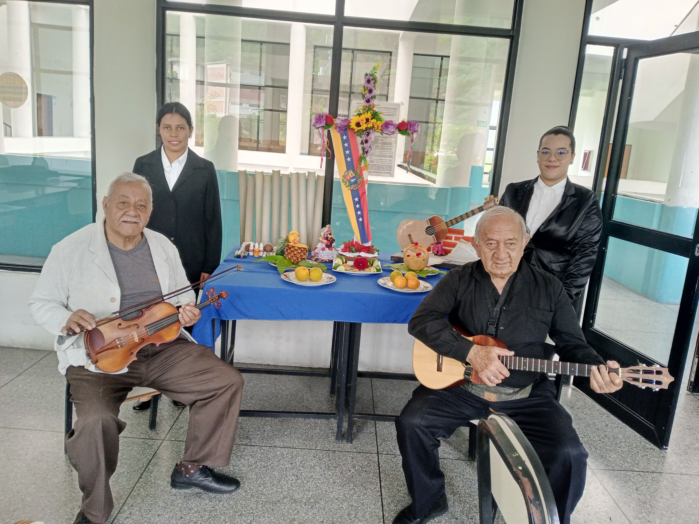
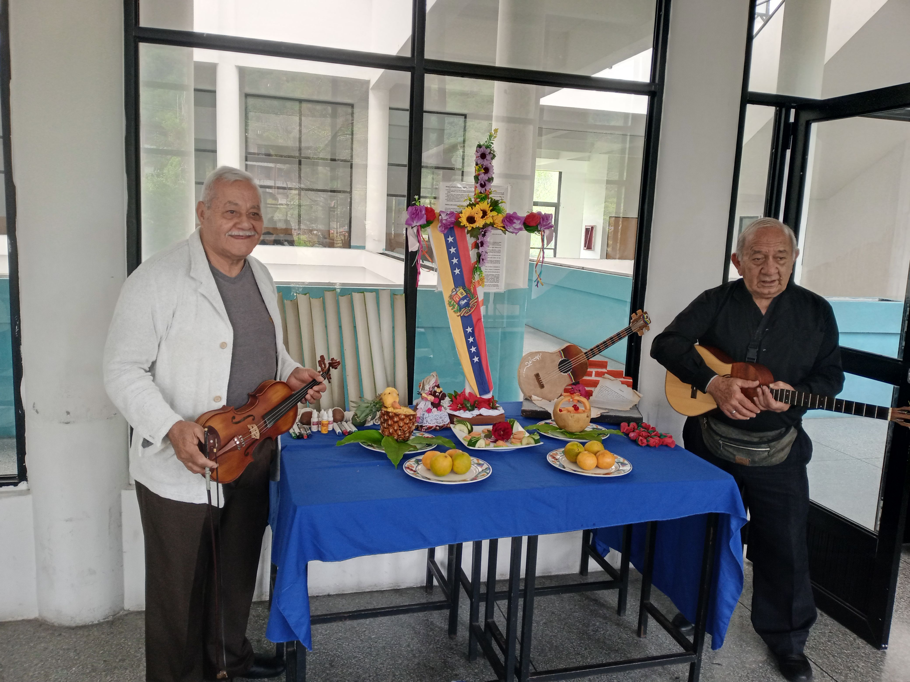
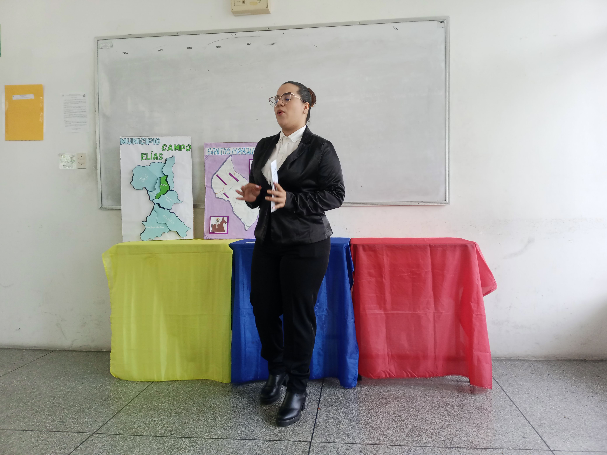
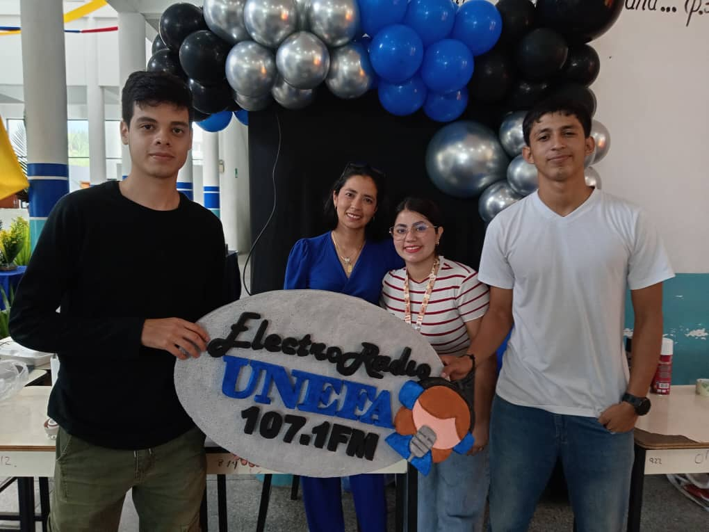
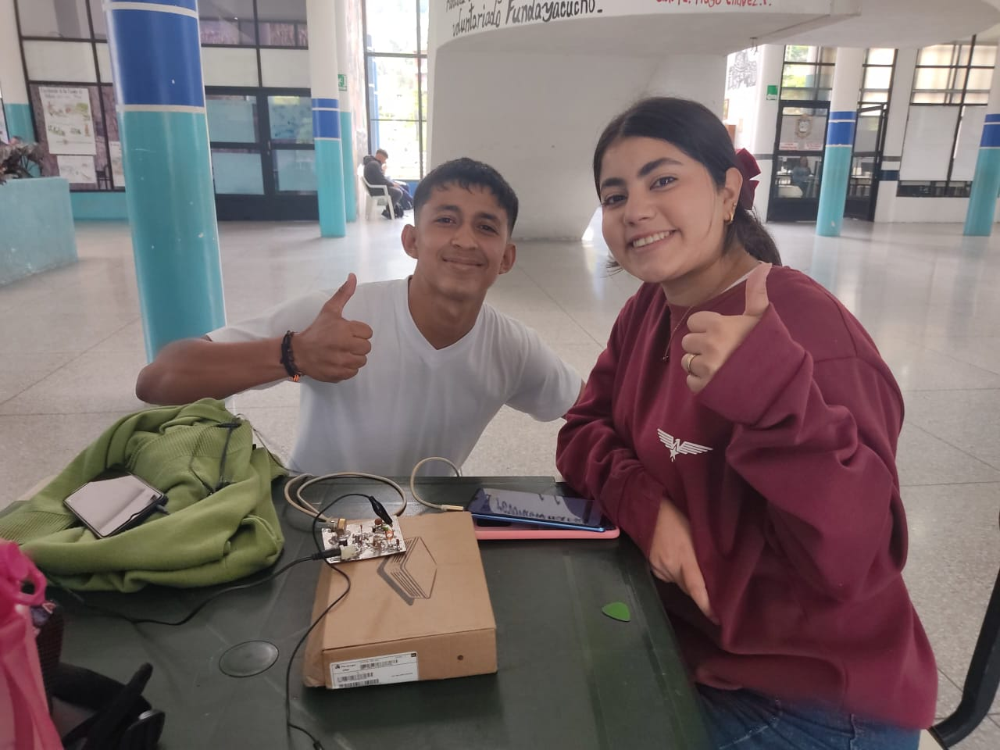

Bienvenido
¿Quiénes Somos?
Somos un grupo de estudiantes de la unefa apasionados por la tecnologia y queremos usar nuestros conocimientos para fomentar la cultura mérideña, dedicados a promover y preservar nuestras tradiciones y costumbres.
Misión
Nuestra misión es educar y conectar a las personas con la rica cultura de Mérida, a través de esta pagina que contiene informacion sobre nuestra bella merida como tradicones,eventos,flora y fauna,atracciones de merida y su musica.
Visión
Queremos ser un referente en la promoción de la cultura mérideña, inspirando a las futuras generaciones a valorar y celebrar nuestras raíces.


Persona 1 - Cofundadora y Directora Ejecutiva
Con más de 15 años liderando proyectos innovadores, impulsa la visión y estrategia de la empresa.
Cultura Merideña
La cultura merideña es rica en tradiciones, música, danzas y gastronomía. Aquí te compartimos algunos aspectos destacados:
- Tradiciones y festividades
- Gastronomía típica
- Música y danzas folclóricas
¡UNEFA-CULTURA!
La unefa es una de las universidades que ayuda a fomentar la cultura merideña y que sus estudiantes aprendan de sus raicez.
Misión
Nuestra misión en la UNEFA Mérida es forjar profesionales íntegros y conscientes de su herencia cultural, a través de un currículo que integra activamente la riqueza de la cultura merideña. Nos comprometemos a crear un ambiente universitario donde cada estudiante no solo adquiera conocimientos académicos de vanguardia, sino que también explore, valore y promueva las tradiciones, el arte, la historia y el folclore de nuestra región andina.
Visión
Imaginamos una UNEFA Mérida donde cada estudiante, al culminar su formación, no solo sea un profesional de excelencia, sino también un ferviente embajador de la cultura merideña. Visualizamos nuestros pasillos vibrando con el espíritu de los Andes: el eco de los versos de nuestros poetas, la cadencia de la música tradicional, el colorido de nuestras artesanías y la riqueza de nuestras costumbres.
Fomentando la cultura merideña




